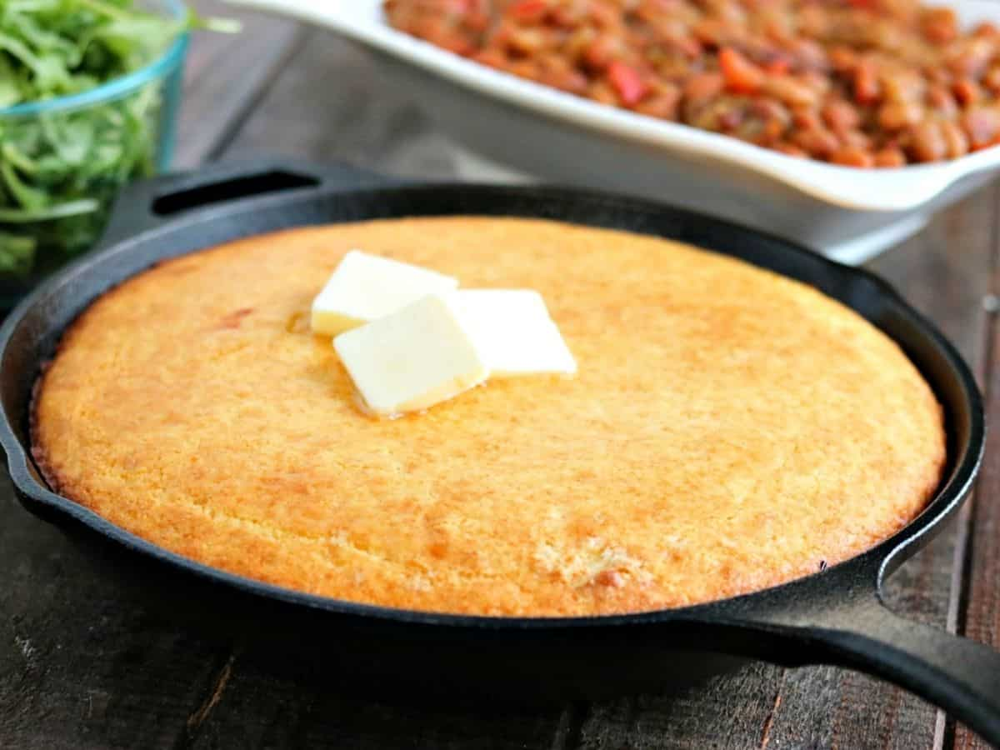

Skillet Cornbread

Description
Fluffy and Golden, this Skillet Cornbread recipe is a cinch to make, and is a fantastic side for any meal! Mix it, pour it and bake it. Done!
Ingredients
- 1 Tbs butter
- 1 cup all purpose flour
- 1 cup cornmeal
- 2/3 cup sugar
- 1 tsp salt
- 1 Tbs baking powder
- 1 egg
- 1 cup milk
- 1/3 cup vegetable oil
Instructions
- Preheat oven to 400F and lightly grease an 8 inch cast iron skillet with butter.
- In a large bowl, combine flour, cornmeal, sugar, salt and baking powder.
- In another bowl blend the egg, milk and vegetable oil until well combined.
- Add wet ingredients to dry ingredients and mix until just combined.
- Pour batter into skillet.
- Bake for 20 to 25 minutes until golden brown, and a toothpick inserted in the middle comes out clean.
- Remove skillet from oven, and cool slightly before serving.